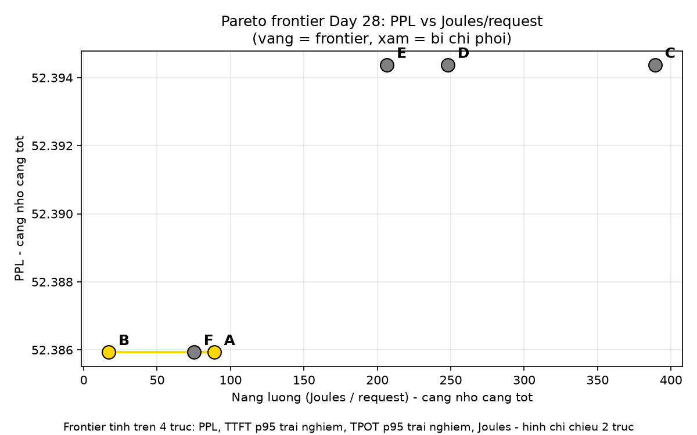

Tổng quan: 4 trục, 6 cấu hình, và 2 bản số độ trễ
Ba tuần qua ta tích lũy từng đòn bẩy riêng lẻ: quantization (Day 22), pruning (Day 24), distillation (Day 23), FlashAttention (Day 25), KV cache + batching + speculative decoding (Day 27). Hôm nay ghép chúng lại thành một hệ thống phục vụ thật và học cách trả lời câu hỏi khó nhất của serving: cấu hình nào là “tốt nhất” khi nhanh hơn thường đồng nghĩa với tốn điện hơn?
Câu trả lời của mini-project này: không có cấu hình tốt nhất tuyệt đối — chỉ có điểm trên Pareto frontier + SLO của sản phẩm. Và để tìm frontier cho đúng, phải đo đủ 4 trục, trên cùng một prompt set, với cùng một cách đo:
| Trục | Đo bằng | Càng… càng tốt |
|---|---|---|
| Chất lượng | PPL trên 3 câu cố định (không trùng prompt set) | thấp |
| Độ trễ trải nghiệm — TTFT p95 | Thời gian tới token đầu mà người dùng phải chờ (không chia cho batch) | thấp |
| Độ trễ trải nghiệm — TPOT p95 | Thời gian mỗi token tiếp theo mà người dùng phải chờ (không chia cho batch) | thấp |
| Năng lượng | Joules/request = 65 W giả định × tổng thời gian / số request | thấp |
Kết quả chính (đo lại sau khi sửa theo Trainer review):
- Frontier = {A, B}. A thắng độ trễ (TTFT trải nghiệm p95 106 ms, TPOT 95 ms), B thắng năng lượng (17,1 J/request). PPL hòa nhau 52,39 ở cả 6 cấu hình.
- Chatbot (SLO: TTFT p95 trải nghiệm < 300 ms): chọn A. B rẻ nhất nhưng người dùng thật phải chờ 396 ms nên trượt SLO.
- Batch offline (PPL tăng tối đa 5% so với A): chọn B — tiết kiệm 80,7% năng lượng so với A (17,1 so với 88,9 J/request).
- C / D / E bị A chi phối (thua A ở cả 4 trục), F bị B chi phối — loại ngay, không cần tranh cãi.
Bài A — Benchmark công bằng 6 cấu hình: một biến duy nhất thay đổi
Quy tắc Day 24 + Day 28, viết ngay đầu file: “Thứ duy nhất thay đổi là ___” — mỗi lần chạy chỉ đổi một biến (dtype, hoặc batch size, hoặc use_cache). Mọi thứ khác — cùng prompt set, cùng warmup, cùng phần cứng — giữ nguyên. So sánh INT8 batch 32 với FP16 batch 1 rồi kết luận “INT8 nhanh gấp 5 lần” là kết luận vô giá trị: đó là so sánh batch size, không phải so sánh quantization.
| Cấu hình | dtype | batch | use_cache | Thứ duy nhất thay đổi (so với A) |
|---|---|---|---|---|
| A (gốc) | FP32 | 1 | True | không đổi |
| B | FP32 | 8 | True | batch size |
| C | FP16 | 1 | True | dtype |
| D | FP16 | 8 | True | dtype, batch size |
| E | FP16 | 32* | True | dtype, batch size |
| F | FP32 | 8 | False | batch size, use_cache |
* E đặt batch 32 nhưng prompt set chỉ có 10 câu nên mỗi batch chỉ gom được 10 prompt — hiệu lực là 10, không phải 32. Đây cũng là lý do tỉ lệ trải nghiệm/khấu hao của E đúng bằng 10,0× (xem dưới).
Lab tự tính 7 cặp đôi công bằng (chỉ khác đúng 1 biến) bằng _cap_doi_cong_bang(): A-B (batch size), A-C (dtype), B-D (dtype), B-F (use_cache), C-D (batch size), C-E (batch size), D-E (batch size). Cặp A-D khác 2 biến (dtype + batch) nên không có trong danh sách — so A với D thì không kết luận được gì về riêng dtype hay riêng batch. Tự kiểm tra khóa đúng 7 cặp này bằng assert.
Kết quả đo thật (p95, 3 rep) — cả 2 bản số độ trễ
| Cấu hình | PPL | TTFT p95 (ms): khấu hao → trải nghiệm | TPOT p95 (ms): khấu hao → trải nghiệm | J/request | n_mẫu p95 |
|---|---|---|---|---|---|
| A | 52,39 | 105,7 → 105,7 | 95,0 → 95,0 | 88,9 | 90 |
| B | 52,39 | 93,6 → 396,0 | 38,7 → 98,2 | 17,1 | 18 |
| C | 52,39 | 1291,4 → 1291,4 | 318,4 → 318,4 | 389,2 | 90 |
| D | 52,39 | 1003,1 → 6685,3 | 321,0 → 1293,7 | 248,0 | 18 |
| E | 52,39 | 863,0 → 8630,3 | 150,9 → 1509,2 | 206,6 | 9 |
| F | 52,39 | 58,7 → 469,4 | 103,4 → 626,2 | 75,1 | 18 |
PPL: A/B/F = 52,3859, C/D/E = 52,3944 — làm tròn đều 52,39. Chênh 0,017% giữa FP32 và FP16, nhỏ hơn sai số đo: quantization FP16 gần như không mất chất lượng trên 3 câu PPL này (nhưng đừng suy ra “FP16 không mất gì” cho tác vụ thật — PPL trên 3 câu ngắn không đủ nhạy). Số đầy đủ (p50 ± độ lệch, p95 ± độ lệch) nằm trong results.json và demo 1 bên dưới.
Vì sao tỉ lệ trải nghiệm / khấu hao không đúng bằng batch size?
Ước lượng nhanh “trải nghiệm = khấu hao × batch” chỉ đúng khi mọi batch đều đầy. Prompt set có 10 câu, batch 8 gom thành 2 batch: 8 + 2. Batch cuối chỉ có 2 request nên mẫu khấu hao của nó chỉ chia cho 2, không phải 8 — làm phồng các percentile khấu hao. Hơn nữa p95 (nearest-rank) của bản khấu hao và của bản trải nghiệm có thể rơi vào hai batch khác nhau: p95 khấu hao của B (93,6 ms) đến từ batch 2 request (t_prefill 187 ms), còn p95 trải nghiệm (396 ms) đến từ batch 8 request. Tỉ lệ đo được:
| Cấu hình | Batch (hiệu lực) | TTFT exp / khấu hao | TPOT exp / khấu hao |
|---|---|---|---|
| A | 1 | 1,00× | 1,00× |
| B | 8 (8+2) | 4,23× | 2,54× |
| C | 1 | 1,00× | 1,00× |
| D | 8 (8+2) | 6,66× | 4,03× |
| E | 32 (hiệu lực 10) | 10,00× | 10,00× |
| F | 8 (8+2) | 8,00× | 6,06× |
Đây cũng là lý do ước tính ~613 ms của Trainer (77 ms × 8, từ số cũ) khác số đo lại 396 ms: số cũ đo lại đã khác (khấu hao p95 của B giờ là 93,6 ms, không còn 77 ms — CPU đo lại dao động theo tải máy), và tỉ lệ thật không phải đúng 8×. Kết luận thì không đổi: B vẫn trượt SLO 300 ms.
Ba phát hiện khác từ bảng số
- FP16 trên CPU chậm hơn FP32 rất nhiều — C (FP16, batch 1) TTFT trải nghiệm 1291 ms so với A (FP32, batch 1) 106 ms, gấp ~12×; D/E cũng chậm hơn hẳn B. Trên CPU không có đơn vị tính FP16 nhanh như GPU, lại thêm chi phí chuyển đổi — đây là phát hiện, không phải lỗi. Đừng mang kết luận “FP16 nhanh hơn” từ GPU sang CPU.
- Tắt KV cache đắt rõ rệt — F (giống B nhưng
use_cache=False) TTFT trải nghiệm 469 ms so với B 396 ms, TPOT trải nghiệm 626 ms so với B 98 ms (gấp 6,4×): không cache thì mỗi bước decode phải đưa lại toàn bộ chuỗi. Cặp B-F là cặp đôi công bằng duy nhất đổi mỗiuse_cache, nên kết luận này sạch. - Batch lớn không phải lúc nào cũng rẻ hơn trên CPU — E (batch 32, hiệu lực 10) tốn 206,6 J/request, đắt hơn B (17,1 J) gấp 12× và chậm hơn hẳn (TTFT trải nghiệm 8630 ms). Trên CPU, batch lớn làm bộ nhớ xáo trộn nhiều hơn lợi ích gom request.
Bước 3 — Ước lượng thô của khung mẫu sai bao nhiêu?
Khung mẫu trong đề bài ước lượng TTFT ≈ tổng thời gian / request (gộp cả decode vào) và TPOT ≈ tổng / 16 token. Lab đo thật từng bước rồi so sánh trên cấu hình A (distilgpt2 FP32, chạy kiểm chứng cho doc này): TTFT ước lượng thô cao hơn đo thật 14,4× (vì gộp cả 16 token decode vào “thời gian tới token đầu”), còn TPOT thô chỉ bằng 1,08× đo thật (chia đều tổng thời gian, trong khi prefill đắt hơn decode / token). Bài học Day 27 lặp lại: muốn số TTFT/TPOT đúng thì đo từng bước, không ước lượng từ tổng thời gian.
p95 gộp mẫu — và một điểm trung thực còn lại
Trước fix, p95 tính riêng từng rep rồi lấy trung bình: batch 32 chỉ có 3 mẫu/rep nên p95 thực chất là giá trị lớn nhất, rất nhiễu. Sau fix, _p95_gop() gom mẫu cả 3 rep rồi tính percentile một lần (A/C: 90 mẫu, B/D/F: 18 mẫu, E: 9 mẫu) và ghi kèm n_mau vào results.json. Nhưng trung thực mà nói: p95 của E vẫn chỉ là giá trị lớn nhất trong 9 mẫu — gom mẫu đã cải thiện nhưng chưa đủ để p95 của E chắc chắn như của A (90 mẫu). Đọc p95 của E thì nhớ kèm con số 9 mẫu này.
Demo 1 — Khấu hao vs trải nghiệm: chọn một cấu hình
Chọn cấu hình để xem cả hai bản số độ trễ (p50/p95, TTFT/TPOT), tỉ lệ trải nghiệm/khấu hao, và so với ước lượng nhanh “× batch”.
Số đo thật từ results.json (commit b69df87). Ước lượng “× batch” dùng batch hiệu lực (E: 10).
Bài B — Pareto frontier 4 trục: ai chi phối ai?
Một cấu hình bị chi phối nếu tồn tại một cấu hình khác tốt hơn hoặc bằng nó ở mọi trục, và tốt hơn hẳn ở ít nhất một trục. “Tốt hơn” = nhỏ hơn, vì cả 4 trục đều càng nhỏ càng tốt. Frontier là tập các cấu hình không bị ai chi phối. Lab kiểm tra bằng dominates(a, b) và tim_frontier() trên 4 trục: PPL, TTFT p95 trải nghiệm, TPOT p95 trải nghiệm, Joules/request.
| Cấu hình | Kết luận | Lý do (tính từ số đo) |
|---|---|---|
| C | Bị A chi phối | PPL 52,39 ≤ 52,39; TTFT trải nghiệm 106 ≤ 1291 ms; TPOT trải nghiệm 95 ≤ 318 ms; 88,9 ≤ 389,2 J/req |
| D | Bị A chi phối | PPL 52,39 ≤ 52,39; TTFT trải nghiệm 106 ≤ 6685 ms; TPOT trải nghiệm 95 ≤ 1294 ms; 88,9 ≤ 248,0 J/req |
| E | Bị A chi phối | PPL 52,39 ≤ 52,39; TTFT trải nghiệm 106 ≤ 8630 ms; TPOT trải nghiệm 95 ≤ 1509 ms; 88,9 ≤ 206,6 J/req |
| F | Bị B chi phối | PPL 52,39 ≤ 52,39; TTFT trải nghiệm 396 ≤ 469 ms; TPOT trải nghiệm 98 ≤ 626 ms; 17,1 ≤ 75,1 J/req |
| A, B | Frontier | Không ai chi phối ai — xem đối đầu dưới đây |
Đối đầu A vs B: mỗi người thắng một nửa
| Trục (càng nhỏ càng tốt) | A | B | Thắng |
|---|---|---|---|
| TTFT p95 trải nghiệm | 106 ms | 396 ms | A (nhanh hơn 3,7×) |
| TPOT p95 trải nghiệm | 95 ms | 98 ms | A — chỉ hơn 3 ms, coi như hòa |
| PPL | 52,39 | 52,39 | Hòa (cùng FP32) |
| Joules/request | 88,9 | 17,1 | B (rẻ hơn 5,2×) |
A thắng độ trễ, B thắng năng lượng, chất lượng hòa — nên không ai chi phối ai, cả hai cùng nằm trên frontier. Đây là bản chất của Pareto: muốn rẻ hơn (B) thì phải chấp nhận chờ lâu hơn; muốn nhanh hơn (A) thì phải trả nhiều điện hơn. Quyết định còn lại không phải của benchmark mà của sản phẩm — xem Bài C.
Lưu ý TPOT trải nghiệm: A thắng B chỉ 3 ms (95 so với 98 ms) — nhỏ hơn độ lệch chuẩn của chính phép đo (p95 std của A là 14,2 ms, của B là 11,2 ms). Nếu chỉ nhìn TPOT thì A và B coi như hòa; A thắng B ở TTFT mới là khác biệt chắc chắn (106 so với 396 ms).

pareto.png do lab vẽ (vàng = frontier {A, B}, xám = bị chi phối). Đọc hình cẩn thận: hình chỉ chiếu 2 trục (Joules, PPL) trong khi frontier tính trên 4 trục (thêm TTFT p95 trải nghiệm, TPOT p95 trải nghiệm) — một điểm bị chi phối vì độ trễ vẫn có thể nằm ngay trên đường vàng và trông như thuộc frontier. Ghi chú 4 trục đã ghi dưới hình trong code sau khi Trainer nhắc (điểm nhẹ 3). Và vì PPL của cả 6 cấu hình đều ~52,39 nên các điểm gần như nằm trên một đường ngang — hình này không kể được câu chuyện độ trễ; câu chuyện đó nằm ở bảng trên.Demo 2 — Ai chi phối ai? Thử hai cấu hình bất kỳ
Chọn X và Y: demo kiểm tra X có chi phối Y không trên cả 4 trục (PPL, TTFT p95 trải nghiệm, TPOT p95 trải nghiệm, J/request), đúng logic dominates() của lab.
Bài C — Chọn theo SLO + Green checkpoint
Frontier xong thì đừng hỏi “cấu hình nào tốt nhất” nữa. Hãy hỏi “SLO của mình là gì?” — lab tính cả hai lựa chọn từ số đo, không gõ tay tên cấu hình.
1. Chatbot tương tác — chọn A
SLO: TTFT p95 trải nghiệm < 300 ms (người dùng chờ từng token). Trong các điểm frontier đạt SLO, chọn điểm rẻ nhất. A đạt SLO (106 ms), B trượt (396 ms) — nên chatbot chọn A (106 ms, 88,9 J/request, PPL 52,39). Điểm rẻ nhất B không được chọn dù nó rẻ hơn 5,2×: rẻ mà người dùng phải chờ 396 ms thì không phải là lựa chọn cho chatbot. Đây là chỗ bản lab đầu sai nghiêm trọng nhất: dùng số khấu hao, B “đạt SLO” ở 77 ms nên chatbot chọn B — một lựa chọn đặt người dùng thật vào tình trạng chờ gần 400 ms.
2. Tác vụ batch offline — chọn B, tiết kiệm 80,7%
SLO: rẻ nhất có thể, PPL tăng tối đa 5% so với cấu hình gốc A. PPL của cả 6 cấu hình đều 52,39 (tăng 0,017%, trong ngưỡng) nên điểm rẻ nhất thắng: B (17,1 J/request), tiết kiệm (88,9 − 17,1) / 88,9 = 80,7% năng lượng so với A. Không cần trả thêm điện cho độ trễ thấp khi không có ai chờ.
3. Green checkpoint
- Loại: C — bị A chi phối trên cả 4 trục (TTFT trải nghiệm 1291 ms so với 106 ms, 389,2 J so với 88,9 J). Chạy FP16 batch 1 trên CPU vừa chậm vừa tốn điện, không có trục nào để biện minh.
- Chọn: A cho chatbot (đạt SLO TTFT trải nghiệm < 300 ms với năng lượng thấp nhất trong số điểm frontier đạt SLO) và B cho batch offline (rẻ nhất trong ngưỡng PPL +5%).
Kết luận chung của lab: không có cấu hình tốt nhất tuyệt đối — chỉ có điểm trên frontier + SLO của sản phẩm; cấu hình bị chi phối loại ngay, không cần tranh cãi.
Trả lời tự kiểm tra (3 câu trong đề)
- X (PPL 24, TTFT 400 ms, 30 J) có bị Y (PPL 22, TTFT 350 ms, 25 J) chi phối không? — Có. Y tốt hơn X ở cả ba trục (22 < 24, 350 < 400, 25 < 30) nên loại X ngay, dù X “trông vẫn ổn”. (Trong lab thật, kiểm tra đủ 4 trục, thêm TPOT.)
- Vì sao phải báo p95 mà không chỉ báo trung bình? — Trung bình giấu trải nghiệm tệ nhất: 19/20 request xong trong 100 ms nhưng 1 request kẹt 3 giây vì tới đúng lúc batch đầy — trung bình vẫn đẹp (~245 ms) nhưng p95 bắt đúng 5% người dùng “đen đủi” đó.
- So INT8 batch 32 với FP16 batch 1, thấy nhanh gấp 5 lần, kết luận “INT8 nhanh hơn” — sai ở đâu? — Sai vì đổi 2 biến cùng lúc (quantization + batch size): đó là so sánh batch size, không phải quantization. Đúng: giữ batch bằng nhau, chỉ đổi dtype; muốn kết luận về batch thì giữ dtype bằng nhau, chỉ đổi batch.
Demo 3 — Đổi SLO, xem lựa chọn đổi theo
Kéo SLO chatbot và ngưỡng PPL offline: demo tính lại lựa chọn từ bảng số đo thật, đúng logic chon_chatbot() / chon_offline() của lab.
Thử SLO 500 ms: B (396 ms) đạt SLO nên chatbot đổi sang B. Thử SLO 100 ms: không điểm frontier nào đạt SLO — lab trả None, và đó là đáp án đúng (cần đổi SLO hoặc thêm cấu hình), không phải chọn bừa một điểm.
Trainer đã sửa gì — trước → sau
Trainer review ở commit 18e1ed7 (07/11/2026, file green_serving_lab_review.py, 1.353 dòng — chỉ thêm 87 dòng comment [TRAINER], 0 dòng xóa, không đổi logic): 2 điểm chính + 3 điểm nhẹ. Sửa xong ở commit b69df87 (đo lại cả 6 cấu hình, tự kiểm tra PASS, đã push). Anh xác nhận “Reviewer confirm source OK rồi nhé” (23:13 JST 07/11/2026) — verdict: Trainer OK lần 2.
Session này kiểm chứng độc lập bản sửa: import lab và chạy tu_kiem_tra() → PASS (10 guard “chan dung” + assert); tính lại frontier từ results.json bằng chính hàm tim_frontier() → {A, B}; chon_chatbot() → A, chon_offline() → B, tiết kiệm 80,7%; cả 6 entry trong results.json đều đủ bộ 24 khóa chuẩn. Khác Day 27 (diff review → lab = 0 dòng vì bản sửa giống hệt file review), ở đây bản sửa không giống file review — vì review chỉ thêm comment, còn sửa là viết lại logic đo: diff review → lab là 611 dòng, nên kiểm chứng phải là chạy lại hàm + số, không phải so diff.
Trước — chỉ trả bản khấu hao
_sinh_mot_batch tra
(ttft, tpot, tho_ttft, tho_tpot)
ttft = t_prefill / so_req
tpot = t_decode / so_req / n_decode
Frontier {B}, chatbot chon B (77 ms).Sau — trả thêm bản trải nghiệm
_sinh_mot_batch tra them
(ttft_exp, tpot_exp):
ttft_exp = t_prefill (khong chia)
tpot_exp = t_decode / n_decode
Frontier {A, B}, chatbot chon A.Điểm chính 1 — TTFT/TPOT khấu hao ≠ độ trễ trải nghiệm. Số cũ chia thời gian batch cho số request (chi phí/request), trong khi người dùng thật phải chờ hết cả batch. Trainer tính lại từ results.json cũ: B khấu hao 77 ms nhưng trải nghiệm ~613 ms (×8), A trải nghiệm 143 ms — nếu frontier dùng trục TTFT trải nghiệm thì frontier là {A, B} chứ không chỉ {B}. Cách sửa: _sinh_mot_batch trả thêm ttft_exp/tpot_exp (không chia số request), frontier trục độ trễ + SLO chatbot dùng bản trải nghiệm, giữ bản khấu hao cho trục năng lượng (J tính từ tổng thời gian như hiện tại là đúng). chon_chatbot() giờ so SLO trên ttft_p95_exp; khi đó chatbot chọn A (106 ms, đạt SLO), B chỉ còn thắng ở bài offline/năng lượng.
Đính chính về con số ~613 ms của Trainer: đó là ước tính 77 ms × 8 từ số cũ. Số đo lại sau fix: B khấu hao p95 là 93,6 ms (không còn 77 ms — CPU đo lại dao động theo tải máy) và trải nghiệm p95 đo thật là 396 ms, không phải 613 ms — vì tỉ lệ thật không đúng 8× (batch cuối chỉ có 2 prompt, xem Bài A). Kết luận không đổi: B vẫn trượt SLO 300 ms, chatbot vẫn chọn A. Doc này dùng số đo lại 396 ms, không dùng ước tính 613 ms.
Trước — resume chỉ kiểm tra có “name”
_doc_ket_qua_da_co: entry co khoa "name" la coi nhu "da do xong". C khoi phuc tu log phien khac, thieu tpot_p50_std, tpot_p95, tpot_p95_std - tron am tham vao cung bang/frontier.
Sau — chỉ nhận entry đủ 24 khóa chuẩn
KHOA_CHUAN_KET_QUA (24 khoa, ke ca cac khoa _std va _exp). Thieu khoa -> in "Bo qua ...: thieu ... - do lai cau hinh nay" roi do lai. C do lai trong cung phien: 1291 ms / 389,2 J.
Điểm chính 2 — Resume không validate, số C khôi phục từ phiên khác. Trước đây chỉ cần có khóa name là coi như đo xong, nên số C khôi phục từ log lần chạy 07/11 bị kẹt ở cấu hình D (thiếu 3 trường TPOT, số đã làm tròn) lọt vào frontier — số đo ở phiên khác, điều kiện khác, rồi trộn vào cùng bảng, phá đúng quy tắc “cùng cách đo” của chính lab. Cách sửa: (a) khi resume, chỉ chấp nhận entry đủ bộ khóa chuẩn của do_mot_cau_hinh (có cả các khóa _std), thiếu thì đo lại cấu hình đó; (b) số liệu khôi phục thủ công thì hoặc đo lại trong cùng phiên, hoặc loại khỏi frontier và ghi rõ lý do — không để chúng “đã xong” một cách âm thầm. Tự kiểm tra chứng minh: entry thiếu tpot_p95 bị loại đúng như vậy. Số C đo lại trong cùng phiên (không còn khôi phục): TTFT trải nghiệm p95 1291 ms, 389,2 J/request — khác số cũ khôi phục (1436 ms, 401,2 J).
Điểm nhẹ 1 — p95 quá ít mẫu ở batch lớn. p95 tính riêng từng rep rồi lấy trung bình, nhưng số mẫu mỗi rep phụ thuộc batch: batch 1 có 30 mẫu/rep, batch 8 chỉ 6, batch 32 (hiệu lực 10 prompt) chỉ 3 mẫu/rep — p95 của 3 mẫu thực chất là giá trị lớn nhất, rất nhiễu; kèm theo ttft_p95_std của E rất nhỏ (0,006) dễ gây cảm giác chắc chắn giả tạo. Sửa: _p95_gop() gom mẫu cả 3 rep rồi tính percentile một lần (batch 32 có 9 mẫu, batch 8 có 18, batch 1 có 90), kèm n_mau trong kết quả; _std kèm theo là độ lệch của 3 giá trị p95 từng rep, chỉ để tham khảo độ ổn định, không phải độ tin cậy của p95 gộp.
Điểm nhẹ 2 — Frontier thêm TPOT làm trục thứ 4. Frontier cũ chỉ dùng 3 trục (PPL, TTFT p95, Joules) trong khi lab đo cả TPOT p50/p95. Lần này kết luận không đổi vì B cũng thắng TPOT p95 (46,6 ms, tốt nhất trong các cấu hình có số — theo số cũ), nhưng về nguyên tắc: hoặc thêm tpot_p95 làm trục thứ 4, hoặc ghi một dòng lý do loại TPOT khỏi frontier. Lab chọn thêm trục: _kiem_tra_diem() giờ yêu cầu đủ 4 trục (PPL, ttft_p95_exp, tpot_p95_exp, Joules) và dominates() so cả 4. Lưu ý của Trainer đi kèm: C đang thiếu tpot_p95 nên nếu thêm trục thì phải đo lại C trước — đúng như điểm chính 2 đã làm.
Điểm nhẹ 3 — Hình chỉ vẽ 2 trục. Hình chỉ vẽ 2 trục (Joules, PPL) trong khi frontier tính trên 3 trục (thêm TTFT p95): một điểm bị chi phối vì TTFT vẫn có thể nằm ngay trên đường vàng trong hình và trông như thuộc frontier. Sửa: thêm ghi chú trong title/legend “frontier tính trên 4 trục: PPL, TTFT p95 trải nghiệm, TPOT p95 trải nghiệm, Joules — hình chỉ chiếu 2 trục”, chuyển xuống chân hình (fig.text) vì title dài bị cắt — Practice đã xem lại hình sau khi chuyển.
Chuyện ngoài lề — đo lại cả 6 cấu hình không dễ: chạy 3 lần mới xong. Lần 1 treo ở D do máy thiếu RAM/swap; lần 2 VM restart làm mất E/F; lần 3 mới xong nhờ checkpoint results.json sau mỗi cấu hình + in tiến độ từng rep + tải model 1 lần/dtype. Toàn bộ lần chạy cuối khoảng 40 phút trên CPU.
Checklist tự soát — 23 điểm, đối chiếu vào code Day 28
Checklist trong AGENTS.md có 23 điểm. Mỗi điểm dưới đây ghi rõ nó “sống” ở đâu trong green_serving_lab.py.
- Edge case / input validation: mọi hàm public đều guard ngay đầu —
_kiem_tra_so_thuc(kiểu số, hữu hạn, khoảng),_kiem_tra_cau_hinh(đủ 4 khóa, dtype ∈ {FP32, FP16}),_kiem_tra_diem(đủ 4 trục),_phan_vi(mẫu rỗng, p ngoài (0, 100]),_sinh_mot_batch(batch rỗng, prompt rỗng),_nang_luong(n_req ≥ 1). Tự kiểm tra in 10 dòng “guard …: chan dung”. - Docstring đúng code:
_sinh_mot_batchghi rõ trả 6 giá trị (khấu hao, thô, trải nghiệm) và phân biệt 2 bản số;do_mot_cau_hinhghi rõ p95 gộp mẫu và ý nghĩa của_stdkèm theo;chon_chatbotghi rõ so SLO trên số trải nghiệm, không phải khấu hao. - Device khi tạo tensor: lab không tạo tensor bằng
arange/zeros/onesmặc định CPU — mask mở rộng bằngtorch.cattrênattention_maskcó sẵn vàtorch.ones_like(token), device đi theo input. - File I/O defensive:
_doc_ket_qua_da_cobắtValueError/OSErrorkhi đọc file hỏng, file không phải list thì đo lại từ đầu, entry thiếu khóa chuẩn thì bỏ qua + in lý do (điểm chính 2 của Trainer) — không assume hình dạng file. - Đo thời gian bằng
perf_counter():_sinh_mot_batchdùngtime.perf_counter()quanh từng bước prefill/decode, warmup 2 lượt + đo 3 lượt mỗi rep, dướino_grad(). - Ablation thật sự 1 biến: 7 cặp đôi công bằng, mỗi cặp chỉ khác đúng 1 biến (
_cap_doi_cong_bangtính từ dữ liệu, assert đủ 7 cặp; A-D khác 2 biến nên bị loại khỏi danh sách). Model, prompt set, warmup, phần cứng giữ nguyên. - Resource cleanup trong finally:
bai_atải model 1 lần/dtype,del model+empty_cache()trongfinally— lần chạy bị ngắt giữa chừng cũng không rò rỉ model. - Tham số trả về phải round-trip: tự kiểm tra assert
ttft_exp == ttft × 2với batch 2 câu (cùng một lần đo, chỉ khác chỗ chia hay không); cache vs không cache cho cùng token tiếp theo trên model nhỏ ngẫu nhiên (sai số ≤ 1e-4, cùng argmax);_phan_vikhóa đúng định nghĩa nearest-rank (p95 của [1..20] = 19, p50 của [1..10] = 5). - Tham chiếu chết phải dùng hoặc xóa: mọi import đều dùng (
statisticscho trung bình ± độ lệch,mathcho percentile/guard,oscho đường dẫn + kiểm tra file,jsoncho results.json); không để lại hàm thừa —breakevencủa Day 27 không có ở đây,_so_sanh_uoc_luong_thođược gọi thật trong Bài A. - Ablation: diff lời gọi kể cả mặc định: fix đổi
_sinh_mot_batchtừ trả 4 giá trị thành 6 — mọi chỗ unpack (_mot_luot,_so_sanh_uoc_luong_tho, tự kiểm tra) đều cập nhật trong cùng commitb69df87; cặp B-F diff chỉ khácuse_cache, cùng dtype + batch. - Audit mọi nơi dùng bảng tra cứu + lỗi rõ ở biên + kiểm tra đối xứng + kiểm tra kiểu trước method:
KHOA_CHUAN_KET_QUAlà bảng tra cứu duy nhất cho resume validation (24 khóa, kiểm ở một chỗ);_kiem_tra_diemkiểm tra cả 4 trục trước khi dùng;_phan_vikiểm tra mẫu rỗng và p ngoài khoảng;_kiem_tra_so_thuckiểm tra kiểu trước khi ép float. - Guard kiểm tra dtype + hữu hạn + kiểu tham số, một loại exception:
_kiem_tra_so_thucchặn bool/chuỗi/NaN/Inf bằngValueError;_kiem_tra_cau_hinhchặn dtype ngoài {FP32, FP16}; mọi lỗi đầu vào đều làValueError(quy ước chung của lab, xem Day 27). - Tự kiểm tra phải FAIL bằng assert:
tu_kiem_tra()gom kết quả guard bằngassert all(ket_qua)và assert_phan_vi,_p95_gop, công thức năng lượng (65 W × 10 s / 20 req = 32,5 J), resume loại entry thiếu khóa, dominates + frontier tính tay, 7 cặp công bằng, chọn theo SLO trên số giả, vẽ pareto ghi file thật, cache vs không cache — chỉ in “PASS” khi mọi assert đã qua. - Tập con rỗng trả NaN có chủ đích:
_p95_gop([])raiseValueError(không trả số giả);chon_chatbottrảNonekhi không điểm frontier nào đạt SLO (không chọn bừa);chon_offlinetrả(None, 0.0)khi không điểm nào trong ngưỡng — cả hai đều có docstring ghi rõ. - Sửa docstring cùng lần chỉnh sửa với guard: fix
b69df87kèm comment[TRAINER]giải thích lý do ngay tại dòng đổi và cập nhật docstring của_sinh_mot_batch,_kiem_tra_diem,ve_pareto,chon_chatbot,_doc_ket_qua_da_co,do_mot_cau_hinhtrong cùng commit. - Guard dtype cho mọi tensor vào, kể cả hàm đo tốc độ:
_tai_chi_modelkiểm tra dtype trước khi tải;_sinh_mot_batchkiểm tra batch/use_cache/n_decode trước khi đo;perplexitykiểm tra texts rỗng / câu rỗng trước khi chạy model. - Kết luận rẽ nhánh theo số đo, có ngưỡng rõ:
bai_crẽ nhánhchon_bot is None(không điểm nào đạt SLO) vs chọn được;chon_chatbotlấy điểm rẻ nhất trong số điểm frontier đạt SLO (ngưỡng 300 ms),chon_offlinelấy điểm rẻ nhất trong ngưỡng PPL +5% — tên cấu hình không gõ tay, tính từ số đo. - Số đếm trong câu chữ tính từ dữ liệu: “thứ duy nhất thay đổi” tính từ
_bien_thay_doi(); lý do chi phối (ly_do) là f-string từ số đo 4 trục;n_mautính từlen()mẫu gộp; “batch 32 hiệu lực 10” suy từ 10 prompt / batch 32. - Khi áp review, diff luôn docstring: test mới cho resume (entry thiếu
tpot_p95bị loại, entry đủ khóa được giữ) và assertttft_exp == ttft × 2có cả test âm (guard chặn sai) lẫn test dương (không chặn nhầm đúng, số đo lại giữ nguyên định nghĩa); docstring của 6 hàm đổi đều cập nhật cùng commitb69df87. - Guard sai đối tượng — API im lặng còn nguy hơn crash:
_doc_ket_qua_da_cocũ lặng lẽ nhận số C thiếu trường (điểm chính 2);_sinh_mot_batchcũ lặng lẽ gán nhãn “độ trễ” cho số khấu hao (điểm chính 1). Bản sửa kiểm tra ngay tại chỗ và trả cả hai bản số với tên riêng (ttftvsttft_exp), không để người đọc đoán. - Đo thời gian trên GPU phải synchronize: lab chạy CPU-only nên không có nhánh đo CUDA —
_sinh_mot_batchđo bằngperf_counter()quanh từng lần gọi model; chỉ có một guardcuda.is_available()choempty_cache()lúc dọn dẹp, không bịa nhánh sync cho phần cứng không có (khác Day 25/27 đo cả đường GPU). - Tỉ lệ tốc độ tách cả 2 phía <1 và >1: doc trình bày tỉ lệ trải nghiệm/khấu hao từng cấu hình (1,00×–10,00×) kèm lý do lệch (batch cuối 8+2), không gom thành một tỉ lệ chung; Bước 3 in cả hai chiều (TTFT thô 14,4× cao hơn, TPOT thô 1,08×).
- Bộ nhớ phụ đếm đủ buffer đang sống: lab không công bố số bộ nhớ phụ — năng lượng tính từ tổng thời gian model (prefill + decode) × công suất giả định, chia cho số request (
tong_giay += tho_ttft × len(batch)), và ghi rõ thời gian tokenize không tính (việc chuẩn bị giống nhau ở mọi cấu hình nên không được làm lệch J/request).
Source đầy đủ — green_serving_lab.py (commit b69df87)
Source dưới đây là đúng file đã sửa theo Trainer review và chạy kiểm chứng. Nút “Sao chép” lấy từ bản text thuần; bản tô màu bên dưới chỉ để đọc — hai bản khớp nhau từng byte (đã kiểm chứng bằng script build).
"""Lab Day 28 - Mini-project 4: Green serving va Pareto.
Benchmark 6 cau hinh phuc vu (distilgpt2, CPU)
tren cung prompt set, do du 4 truc: chat luong
(PPL) - do tre TRAI NGHIEM (TTFT/TPOT p95) -
nang luong (Joules/request), roi tim Pareto
frontier va chon cau hinh theo SLO. Ban khau
hao (thoi gian batch / so request) chi la chi
phi / request, khong phai do tre nguoi dung -
xem _sinh_mot_batch.
"Thu duy nhat thay doi la ___" (quy tac Day 24
+ Day 28): moi lan chay chi doi 1 bien (dtype,
hoac batch size, hoac use_cache). Moi thu khac
- cung prompt set, cung concurrency, cung
warmup, cung phan cung - giu nguyen. So sanh
INT8 batch 32 voi FP16 batch 1 roi ket luan
"INT8 nhanh gap 5 lan" la ket luan vo gia tri.
Nang luong: MAY NAY KHONG DO CONG SUAT THAT.
Dung cong suat GIA DINH 65 W (laptop CPU) cho
MOI cau hinh, ghi ro o day va trong bao cao -
cung mot cach tinh cho moi cau hinh, theo dung
de bai. Muon so nang luong that phai do cong
suat bang codecarbon / dong ho do dien.
May chay: CPU (khong GPU), torch CPU. So ms /
J chi dung cho may nay; ket luan dung duoc la
thu hang / frontier / xu huong. Tren CPU, FP16
thuong khong nhanh hon FP32 - neu do ra nhu
vay thi do la phat hien, khong phai loi.
Chay: python green_serving_lab.py
Ket qua: in bang 6 cau hinh + frontier + 3 lua
chon theo SLO, luu results.json va pareto.png
cung thu muc voi file nay.
"""
# ============================================================
# [TRAINER] REVIEW Day 28 (ban green_serving_lab_review.py)
# Kiem chung doc lap: tu_kiem_tra PASS khi chay lai;
# frontier tinh lai tu results.json dung {B} theo 3 truc
# code da chon (ppl, ttft_p95, joules). NHUNG co 2 diem
# chinh can sua truoc khi ket luan "frontier chi co B":
# (1) TTFT/TPOT trong code la CHI PHI KHAU HAO theo
# request (chia cho kich thuoc batch), khong phai do
# tre nguoi dung trai nghiem - xem comment o
# _sinh_mot_batch va chon_chatbot.
# (2) So lieu cau hinh C khoi phuc tu log lan chay khac,
# thieu 3 truong TPOT - xem comment o
# _doc_ket_qua_da_co.
# 3 diem nhe: p95 qua it mau o batch lon (do_mot_cau_hinh),
# frontier chua dung truc TPOT (_kiem_tra_diem), hinh ve
# 2 truc trong khi frontier tinh 3 truc (ve_pareto).
# Moi cho sua deu co comment [TRAINER] ngay trong code.
# ============================================================
import json
import math
import os
import statistics
import time
import matplotlib
matplotlib.use("Agg")
import matplotlib.pyplot as plt
import numpy as np
import torch
import transformers
from transformers import AutoModelForCausalLM
from transformers import AutoTokenizer
MODEL = "distilgpt2"
# Cung prompt set cho MOI cau hinh - khong doi
# giua cac lan chay.
PROMPTS = [
"The future of artificial intelligence is",
"To save energy, a data center should",
"The capital of France is",
"In machine learning, overfitting means",
"A transformer model uses attention to",
"The quick brown fox jumps over",
"Renewable energy is important because",
"To train a neural network, we need",
"The largest planet in the solar system is",
"A good benchmark should measure",
]
# Cau co dinh de tinh perplexity (chat luong) -
# khong trung prompt set.
PPL_TEXTS = [
"The cat sat on the mat and looked out "
"of the window.",
"Machine learning models learn patterns "
"from data.",
"The sun rises in the east and sets in "
"the west.",
]
# Cong suat GIA DINH (xem docstring dau file):
# 65 W CPU laptop; doi thanh 250 neu chay GPU.
ASSUMED_WATTS = 65.0
N_REPS = 3 # moi cau hinh chay 3 lan, bao TB +- LC
WARMUP_PASSES = 2 # so luot chay khoi dong / rep
MEASURE_PASSES = 3 # so luot do that / rep
N_DECODE = 16 # so token sinh them / request
SLO_CHATBOT_TTFT_P95 = 0.300 # giay, chatbot
# Batch offline chap nhan PPL tang toi da 5%
# so voi cau hinh goc FP32 batch 1 (cau hinh A).
PPL_TANG_TOI_DA = 0.05
CONFIGS = [
{"name": "A", "dtype": torch.float32, "batch": 1,
"use_cache": True},
{"name": "B", "dtype": torch.float32, "batch": 8,
"use_cache": True},
{"name": "C", "dtype": torch.float16, "batch": 1,
"use_cache": True},
{"name": "D", "dtype": torch.float16, "batch": 8,
"use_cache": True},
{"name": "E", "dtype": torch.float16, "batch": 32,
"use_cache": True},
{"name": "F", "dtype": torch.float32, "batch": 8,
"use_cache": False},
]
DUONG_KET_QUA = os.path.join(
os.path.dirname(os.path.abspath(__file__)),
"results.json")
DUONG_PARETO = os.path.join(
os.path.dirname(os.path.abspath(__file__)),
"pareto.png")
def _kiem_tra_so_nguyen(ten, gia_tri, toi_thieu=1):
"""Guard: so nguyen (tru bool) >= toi_thieu."""
if isinstance(gia_tri, bool) \
or not isinstance(gia_tri, int) \
or gia_tri < toi_thieu:
raise ValueError(
f"{ten} phai la so nguyen >= {toi_thieu}.")
def _kiem_tra_so_thuc(ten, gia_tri, lon_hon_bang=None,
lon_hon=None):
"""Guard: so thuc huu han, trong khoang neu co.
Chi nhan int/float (tru bool). NaN/Inf bi
chan. Moi loi dau vao deu la ValueError
(quy uoc chung cua ca lab, xem Day 27).
"""
if isinstance(gia_tri, bool) \
or not isinstance(gia_tri, (int, float)):
raise ValueError(f"{ten} phai la so.")
gia_tri = float(gia_tri)
if not math.isfinite(gia_tri):
raise ValueError(f"{ten} phai huu han.")
if lon_hon_bang is not None \
and gia_tri < lon_hon_bang:
raise ValueError(f"{ten} phai >= {lon_hon_bang}.")
if lon_hon is not None and gia_tri <= lon_hon:
raise ValueError(f"{ten} phai > {lon_hon}.")
return gia_tri
def _phan_vi(mau, p):
"""Percentile nearest-rank cua 1 list so.
Sap xep tang dan, lay phan tu o hang
ceil(p / 100 * n) (toi thieu hang 1).
p phai trong (0, 100]. nearest-rank khac
trung vi: p50 cua [1..10] la 5, khong
phai 5.5 - doc so thi nho dung dinh nghia.
Raises:
ValueError: mau rong / khong phai list,
p ngoai (0, 100].
"""
if not isinstance(mau, (list, tuple)) \
or len(mau) == 0:
raise ValueError("mau khong duoc rong.")
_kiem_tra_so_thuc("p", p, lon_hon=0)
if float(p) > 100:
raise ValueError("p phai <= 100.")
ds = sorted(float(x) for x in mau)
hang = max(1, math.ceil(
float(p) / 100.0 * len(ds)))
return ds[hang - 1]
def _nang_luong(watts, giay, n_req):
"""Joules/request = cong suat x thoi gian / n.
Cong suat o day la GIA DINH (xem docstring
dau file), khong phai cong suat do duoc.
"""
_kiem_tra_so_thuc("watts", watts, lon_hon=0)
_kiem_tra_so_thuc("giay", giay, lon_hon_bang=0)
_kiem_tra_so_nguyen("n_req", n_req)
return watts * giay / n_req
def _kiem_tra_cau_hinh(cfg):
"""Guard cau hinh: du 4 khoa, kieu dung.
dtype phai la torch.float32 / float16,
batch int >= 1, use_cache bool, name la
chuoi khong rong.
Returns:
Ban sao dict cau hinh (khong sua goc).
"""
if not isinstance(cfg, dict):
raise ValueError("cau hinh phai la dict.")
for khoa in ("name", "dtype", "batch",
"use_cache"):
if khoa not in cfg:
raise ValueError(
f"cau hinh thieu khoa '{khoa}'.")
if not isinstance(cfg["name"], str) \
or not cfg["name"]:
raise ValueError("name phai la chuoi khong "
"rong.")
if cfg["dtype"] not in (torch.float32,
torch.float16):
raise ValueError(
"dtype phai la torch.float32/float16.")
_kiem_tra_so_nguyen("batch", cfg["batch"])
if not isinstance(cfg["use_cache"], bool):
raise ValueError("use_cache phai la bool.")
return dict(cfg)
def _ten_dtype(dtype):
"""Ten ngan cua dtype: FP32 / FP16."""
if dtype == torch.float32:
return "FP32"
return "FP16"
def _bien_thay_doi(cfg, goc):
"""Bien nao khac giua cfg va cau hinh goc.
So 3 khoa dtype / batch / use_cache, tra
list ten bien khac nhau (rong neu giong
het). Dung de in "thu duy nhat thay doi"
- tinh tu du lieu, khong go tay.
"""
_kiem_tra_cau_hinh(cfg)
_kiem_tra_cau_hinh(goc)
khac = []
if cfg["dtype"] != goc["dtype"]:
khac.append("dtype")
if cfg["batch"] != goc["batch"]:
khac.append("batch size")
if cfg["use_cache"] != goc["use_cache"]:
khac.append("use_cache")
return khac
def _cap_doi_cong_bang(configs):
"""Cap cau hinh chi khac nhau dung 1 bien.
Day moi la cap so sanh cong bang theo quy
tac 1 bien (Day 24/28): doi 2 bien cung
luc thi ket luan khong con gia tri. Tra
list tuple (ten_a, ten_b, bien_doi).
Raises:
ValueError: configs rong / trung ten /
cau hinh sai.
"""
if not isinstance(configs, (list, tuple)) \
or len(configs) == 0:
raise ValueError("configs khong duoc rong.")
ten = [c["name"] for c in configs]
if len(set(ten)) != len(ten):
raise ValueError("ten cau hinh bi trung.")
cap = []
for i in range(len(configs)):
for j in range(i + 1, len(configs)):
khac = _bien_thay_doi(configs[i],
configs[j])
if len(khac) == 1:
cap.append((configs[i]["name"],
configs[j]["name"],
khac[0]))
return cap
def _tai_tokenizer():
"""Tai tokenizer distilgpt2.
Padding trai (left) de token cuoi cung cua
moi hang trong batch luon la token that
cuoi cua prompt do - can cho vong lap sinh
tung buoc o _sinh_mot_batch. Pad token =
EOS (distilgpt2 khong co pad rieng).
"""
tok = AutoTokenizer.from_pretrained(MODEL)
tok.pad_token = tok.eos_token
tok.padding_side = "left"
return tok
def _tai_chi_model(dtype):
"""Tai distilgpt2 theo dtype, che do eval."""
if dtype not in (torch.float32, torch.float16):
raise ValueError(
"dtype phai la torch.float32/float16.")
model = AutoModelForCausalLM.from_pretrained(
MODEL, dtype=dtype)
model.eval()
return model
def tai_model(dtype):
"""Tai tokenizer + distilgpt2 theo dtype.
Returns:
(tokenizer, model) o che do eval.
"""
return _tai_tokenizer(), _tai_chi_model(dtype)
@torch.no_grad()
def perplexity(tok, model, texts):
"""PPL trung binh tren cac cau co dinh.
Cang thap cang tot. Loss cua HF da dich
chuyen noi bo (du doan token t+1 tu t),
nen so token duoc du doan la len - 1 / cau
- dung so do lam trong so khi gop.
Raises:
ValueError: texts rong / phan tu rong.
"""
if not isinstance(texts, (list, tuple)) \
or len(texts) == 0:
raise ValueError("texts khong duoc rong.")
tong_nll = 0.0
tong_token = 0
for cau in texts:
if not isinstance(cau, str) or not cau:
raise ValueError(
"moi cau phai la chuoi khong rong.")
ids = tok(cau, return_tensors="pt").input_ids
out = model(ids, labels=ids)
n = ids.shape[1] - 1
tong_nll += float(out.loss) * n
tong_token += n
if tong_token == 0:
raise ValueError(
"cau qua ngan, khong co token de doan.")
return float(np.exp(tong_nll / tong_token))
@torch.no_grad()
def _sinh_mot_batch(tok, model, batch, use_cache,
n_decode=N_DECODE):
"""Sinh tham lam 1 batch, do TTFT/TPOT THAT.
Thay vi dung generate() roi uoc luong tho
(tong thoi gian / so token), do truc tiep
tung buoc: buoc prefill dau tien = TTFT,
cac buoc decode sau = TPOT (Day 27: tach
that, khong gop 1 so). Tra ca uoc luong
tho cua khung mau de so sanh o Buoc 3.
PHAN BIET 2 BAN SO (review Day 28, diem
chinh 1) - dung sai ban la ket luan sai:
- KHAU HAO (chi phi / request): thoi gian
batch chia cho so request - dung de tinh
nang luong / thong luong, KHONG phai do
tre nguoi dung cam nhan.
- TRAI NGHIEM (do tre nguoi dung): trong 1
batch, MOI request deu phai cho het
t_prefill moi nhan token dau, va moi buoc
decode moi request deu cho het thoi gian
cua buoc do. TTFT_exp = t_prefill (khong
chia), TPOT_exp = t_decode / n_decode
(khong chia). Frontier truc do tre + SLO
chatbot phai dung ban trai nghiem.
use_cache=True: moi buoc decode chi dua 1
token moi + KV cache cu. use_cache=False:
moi buoc phai dua lai TOAN BO chuoi (khong
cache thi khong co gi de dung lai) - dat
hon ro, dung nhu ly thuyet.
Args:
batch: list prompt (chuoi khong rong).
use_cache: bool.
n_decode: so token sinh them, int >= 1.
Returns:
(ttft_s, tpot_s, ttft_tho_s, tpot_tho_s,
ttft_exp_s, tpot_exp_s) - ttft/tpot la
ban khau hao (giay / request, / token
cho TPOT); tho = tong thoi gian / so
token (cach uoc luong cua khung mau);
exp la ban trai nghiem (giay, khong
chia so request).
Raises:
ValueError: batch rong / prompt rong,
use_cache khong phai bool, n_decode
sai, model khong phai GPT2.
"""
if not isinstance(batch, (list, tuple)) \
or len(batch) == 0:
raise ValueError("batch khong duoc rong.")
for cau in batch:
if not isinstance(cau, str) or not cau:
raise ValueError(
"moi prompt phai la chuoi khong "
"rong.")
if not isinstance(use_cache, bool):
raise ValueError("use_cache phai la bool.")
_kiem_tra_so_nguyen("n_decode", n_decode)
so_req = len(batch)
enc = tok(batch, return_tensors="pt",
padding=True)
input_ids = enc.input_ids
attention_mask = enc.attention_mask
# Prefill: dua ca prompt 1 lan.
t0 = time.perf_counter()
out = model(input_ids=input_ids,
attention_mask=attention_mask,
use_cache=use_cache)
t_prefill = time.perf_counter() - t0
past = out.past_key_values if use_cache else None
logits = out.logits
# Decode: moi buoc 1 token, argmax tham lam.
t_decode = 0.0
for _ in range(n_decode):
token = logits[:, -1].argmax(
dim=-1, keepdim=True)
if use_cache:
input_ids = token
attention_mask = torch.cat(
[attention_mask,
torch.ones_like(token)], dim=1)
t1 = time.perf_counter()
out = model(input_ids=input_ids,
attention_mask=attention_mask,
past_key_values=past,
use_cache=True)
t_decode += time.perf_counter() - t1
past = out.past_key_values
else:
input_ids = torch.cat(
[input_ids, token], dim=1)
attention_mask = torch.cat(
[attention_mask,
torch.ones_like(token)], dim=1)
t1 = time.perf_counter()
out = model(input_ids=input_ids,
attention_mask=attention_mask,
use_cache=False)
t_decode += time.perf_counter() - t1
logits = out.logits
# [TRAINER] DIEM CHINH 1 - ttft/tpot o day la CHI PHI
# KHAU HAO theo request (thoi gian batch / so request),
# KHONG phai do tre nguoi dung trai nghiem. Trong 1
# batch, MOI request deu phai cho het t_prefill moi
# nhan token dau, va moi buoc decode moi request deu
# cho het thoi gian cua buoc do. Do tre trai nghiem:
# TTFT_exp = t_prefill (khong chia so_req)
# TPOT_exp = t_decode / n_decode (khong chia so_req)
# So lieu Day 28 (p95, tinh lai tu results.json):
# B khau hao 77 ms nhung trai nghiem ~613 ms (x8);
# A trai nghiem 143 ms. Neu frontier dung truc TTFT
# trai nghiem thi frontier la {A, B} chu khong chi
# {B}: A thang do tre, B thang nang luong, PPL hoa.
# Cach sua: tra them ttft_exp/tpot_exp, dung ban trai
# nghiem cho frontier truc do tre + SLO, giu ban khau
# hao cho truc nang luong (J tinh tu tong thoi gian
# nhu hien tai la dung).
ttft = t_prefill / so_req
tpot = t_decode / so_req / n_decode
tong = t_prefill + t_decode
return (ttft, tpot, tong / so_req,
tong / so_req / n_decode,
t_prefill, t_decode / n_decode)
def _mot_luot(tok, model, cfg):
"""1 luot qua ca prompt set, tra mau do.
Gom prompt thanh batch theo cfg, moi batch
do bang _sinh_mot_batch. Tra (list TTFT
khau hao, list TPOT khau hao, list TTFT
trai nghiem, list TPOT trai nghiem, tong
giay MODEL do, so request) - list co 1
phan tu / batch (moi phan tu la gia tri
cua batch do); tong giay chi tinh thoi
gian model, khong tinh tokenize.
"""
cfg = _kiem_tra_cau_hinh(cfg)
mau_ttft = []
mau_tpot = []
mau_ttft_exp = []
mau_tpot_exp = []
tong_giay = 0.0
for i in range(0, len(PROMPTS), cfg["batch"]):
batch = PROMPTS[i:i + cfg["batch"]]
ttft, tpot, tho_ttft, _, ttft_exp, \
tpot_exp = _sinh_mot_batch(
tok, model, batch, cfg["use_cache"])
# Tong thoi gian model / batch = TTFT tho
# x so request (khong tinh tokenize - viec
# chuan bi giong nhau o moi cau hinh nen
# khong duoc lam lech J/request).
tong_giay += tho_ttft * len(batch)
mau_ttft.append(ttft)
mau_tpot.append(tpot)
mau_ttft_exp.append(ttft_exp)
mau_tpot_exp.append(tpot_exp)
return (mau_ttft, mau_tpot, mau_ttft_exp,
mau_tpot_exp, tong_giay, len(PROMPTS))
def _p95_gop(mau_theo_rep):
"""p95 gop: gom mau ca 3 rep roi tinh 1 lan.
p95 tinh rieng tung rep roi lay trung binh
se thieu mau o batch lon (batch 32 chi 3
mau/rep - p95 thuc chat la gia tri lon
nhat). Gom lai: batch 32 co 9 mau, batch 8
co 18, batch 1 co 90.
"""
gop = []
for mau in mau_theo_rep:
gop.extend(mau)
if len(gop) == 0:
raise ValueError("khong co mau de tinh p95.")
return _phan_vi(gop, 95)
# Bo khoa chuan cua 1 ket qua cau hinh (xem
# do_mot_cau_hinh). _doc_ket_qua_da_co chi chap
# nhan entry du bo khoa nay (ke ca cac khoa
# _std) - thieu thi do lai cau hinh do, khong
# tron so phien khac vao (review Day 28).
KHOA_CHUAN_KET_QUA = (
"name", "dtype", "batch", "use_cache", "ppl",
"ttft_p50", "ttft_p50_std", "ttft_p95",
"ttft_p95_std", "tpot_p50", "tpot_p50_std",
"tpot_p95", "tpot_p95_std", "ttft_p50_exp",
"ttft_p50_exp_std", "ttft_p95_exp",
"ttft_p95_exp_std", "tpot_p50_exp",
"tpot_p50_exp_std", "tpot_p95_exp",
"tpot_p95_exp_std", "joules_per_req",
"joules_per_req_std", "n_mau",
)
def do_mot_cau_hinh(tok, model, cfg):
"""Do 1 cau hinh: 3 rep, bao TB +- do lech.
Moi rep: warmup WARMUP_PASSES luot (bo
qua, de may on dinh) roi do MEASURE_PASSES
luot. p50 lay trung binh +- do lech chuan
mau qua 3 rep (statistics.stdev, n - 1).
p95 GOP mau cua ca 3 rep roi tinh 1 lan
(batch lon co it mau/rep, p95 rieng tung
rep rat nhieu); _std kem theo la do lech
cua 3 gia tri p95 tung rep, chi de tham
khao do on dinh, khong phai do tin cay
cua p95 gop. Tra ca 2 ban so: khau hao
(chi phi / request) va trai nghiem (do tre
nguoi dung) - xem _sinh_mot_batch. PPL do
1 lan (tien dinh, khong phu thuoc lan
chay). n_mau = so mau gop dung tinh p95.
Returns:
Dict ket qua 1 cau hinh (xem bai_a).
"""
cfg = _kiem_tra_cau_hinh(cfg)
ppl = perplexity(tok, model, PPL_TEXTS)
# Mau tung rep, theo 4 day so: khau hao va
# trai nghiem, TTFT va TPOT.
theo_rep_mau = {"ttft": [], "tpot": [],
"ttft_exp": [], "tpot_exp": []}
nang_luong = []
for rep in range(N_REPS):
# In tien do moi rep: lan chay dai (chuc
# phut tren CPU) phai cho thay no con
# song, khong duoc im lang hang chuc
# phut nhu 1 tien trinh treo.
print(f" rep {rep + 1}/{N_REPS} (warmup "
f"{WARMUP_PASSES} + do "
f"{MEASURE_PASSES})...", flush=True)
for _ in range(WARMUP_PASSES):
_mot_luot(tok, model, cfg)
mau = {"ttft": [], "tpot": [],
"ttft_exp": [], "tpot_exp": []}
giay = 0.0
n_req = 0
for _ in range(MEASURE_PASSES):
a, b, c, d, g, n = _mot_luot(
tok, model, cfg)
mau["ttft"].extend(a)
mau["tpot"].extend(b)
mau["ttft_exp"].extend(c)
mau["tpot_exp"].extend(d)
giay += g
n_req += n
for khoa in ("ttft", "tpot", "ttft_exp",
"tpot_exp"):
theo_rep_mau[khoa].append(mau[khoa])
nang_luong.append(_nang_luong(
ASSUMED_WATTS, giay, n_req))
def _tb_lc(ds):
"""Trung binh +- do lech chuan mau."""
if len(ds) == 1:
return float(ds[0]), 0.0
return (float(statistics.mean(ds)),
float(statistics.stdev(ds)))
kq = {"name": cfg["name"],
"dtype": _ten_dtype(cfg["dtype"]),
"batch": cfg["batch"],
"use_cache": cfg["use_cache"],
"ppl": ppl,
"n_mau": sum(len(m)
for m in theo_rep_mau["ttft"])}
for mau_khoa, tien_to, hau_to in (
("ttft", "ttft", ""),
("tpot", "tpot", ""),
("ttft_exp", "ttft", "_exp"),
("tpot_exp", "tpot", "_exp")):
p50_rep = [float(np.median(m))
for m in theo_rep_mau[mau_khoa]]
p95_rep = [_phan_vi(m, 95)
for m in theo_rep_mau[mau_khoa]]
tb, lc = _tb_lc(p50_rep)
kq[f"{tien_to}_p50{hau_to}"] = tb
kq[f"{tien_to}_p50{hau_to}_std"] = lc
# p95 lay tu mau gop; _std la do lech cua
# 3 gia tri p95 tung rep (chi tham khao).
kq[f"{tien_to}_p95{hau_to}"] = _p95_gop(
theo_rep_mau[mau_khoa])
_, lc95 = _tb_lc(p95_rep)
kq[f"{tien_to}_p95{hau_to}_std"] = lc95
tb, lc = _tb_lc(nang_luong)
kq["joules_per_req"] = tb
kq["joules_per_req_std"] = lc
return kq
def _kiem_tra_diem(diem):
"""Guard diem Pareto: du 4 truc so huu han.
Truc (review Day 28, diem chinh 1 + diem
nhe 2): ppl, ttft_p95_exp (do tre TRAI
NGHIEM, khong phai ban khau hao),
tpot_p95_exp (do tre TRAI NGHIEM),
joules_per_req - ca 4 cang nho cang tot.
Tra dict da chuan hoa (name giu nguyen, 4
truc float).
"""
if not isinstance(diem, dict):
raise ValueError("diem phai la dict.")
for khoa in ("name", "ppl", "ttft_p95_exp",
"tpot_p95_exp", "joules_per_req"):
if khoa not in diem:
raise ValueError(
f"diem thieu khoa '{khoa}'.")
if not isinstance(diem["name"], str) \
or not diem["name"]:
raise ValueError("name phai la chuoi khong "
"rong.")
truc = {}
for khoa in ("ppl", "ttft_p95_exp",
"tpot_p95_exp", "joules_per_req"):
truc[khoa] = _kiem_tra_so_thuc(
khoa, diem[khoa], lon_hon_bang=0)
return {"name": diem["name"], **truc}
def dominates(a, b):
"""True neu a chi phoi b (Pareto).
a tot hon hoac bang b o CA 4 truc (ppl,
ttft_p95_exp, tpot_p95_exp,
joules_per_req) VA tot hon han o IT NHAT
1 truc. "Tot hon" = nho hon vi ca 4 truc
deu cang nho cang tot. Hai diem bang nhau
o ca 4 truc thi khong ai chi phoi ai (can
tot hon han o 1 truc).
"""
a = _kiem_tra_diem(a)
b = _kiem_tra_diem(b)
tot_hon_hoac_bang = all(
a[k] <= b[k] for k in
("ppl", "ttft_p95_exp", "tpot_p95_exp",
"joules_per_req"))
tot_hon_han = any(
a[k] < b[k] for k in
("ppl", "ttft_p95_exp", "tpot_p95_exp",
"joules_per_req"))
return tot_hon_hoac_bang and tot_hon_han
def tim_frontier(results):
"""Tim frontier + cau hinh bi chi phoi.
frontier = cau hinh KHONG bi cau hinh nao
chi phoi. Moi cau hinh bi chi phoi kem ten
ke chi phoi no (ke dau tien tim thay) de
viet cau "___ bi ___ chi phoi vi ___".
Returns:
(frontier, dominated) - 2 list dict,
dominated co them khoa "bi_chi_phoi_boi"
(ten ke chi phoi) va "ly_do" (chuoi
mo ta 4 truc cua ke chi phoi tot hon).
"""
if not isinstance(results, (list, tuple)) \
or len(results) == 0:
raise ValueError("results khong duoc rong.")
ds = [_kiem_tra_diem(r) for r in results]
frontier = []
dominated = []
for r in ds:
ke_chi_phoi = None
for khac in ds:
if khac["name"] == r["name"]:
continue
if dominates(khac, r):
ke_chi_phoi = khac
break
if ke_chi_phoi is None:
frontier.append(r)
else:
ly_do = (
f"PPL {ke_chi_phoi['ppl']:.2f} <= "
f"{r['ppl']:.2f}, TTFT p95 trai "
f"nghiem "
f"{ke_chi_phoi['ttft_p95_exp'] * 1000:.0f} "
f"<= {r['ttft_p95_exp'] * 1000:.0f} ms, "
f"TPOT p95 trai nghiem "
f"{ke_chi_phoi['tpot_p95_exp'] * 1000:.0f} "
f"<= {r['tpot_p95_exp'] * 1000:.0f} ms, "
f"{ke_chi_phoi['joules_per_req']:.1f} "
f"<= {r['joules_per_req']:.1f} J/req")
dominated.append(
{**r, "bi_chi_phoi_boi":
ke_chi_phoi["name"],
"ly_do": ly_do})
return frontier, dominated
def ve_pareto(results, ten_frontier, duong_ra):
"""Ve scatter Pareto: x = J/request, y = PPL.
Frontier mau vang, noi bang duong vang
(sap xep theo x tang dan); bi chi phoi
mau xam; ghi ten A-F canh moi diem. Luu
thanh file PNG (khong hien cua so).
LUU Y (review Day 28, diem nhe 3): hinh
chi chieu 2 truc (Joules, PPL) trong khi
frontier tinh tren 4 truc (them TTFT p95
trai nghiem, TPOT p95 trai nghiem) - 1
diem bi chi phoi vi do tre van co the nam
ngay tren duong vang va trong nhu thuoc
frontier. Ghi chu trong title cho ro.
Raises:
ValueError: results rong, ten_frontier
chua ten la, duong ra khong ghi duoc.
"""
if not isinstance(results, (list, tuple)) \
or len(results) == 0:
raise ValueError("results khong duoc rong.")
ds = [_kiem_tra_diem(r) for r in results]
ten_ds = {r["name"] for r in ds}
if not set(ten_frontier) <= ten_ds:
raise ValueError(
"ten_frontier chua ten la.")
fig, ax = plt.subplots(figsize=(8, 5))
for r in ds:
tren_frontier = r["name"] in ten_frontier
ax.scatter(
r["joules_per_req"], r["ppl"],
c="gold" if tren_frontier else "gray",
s=120,
edgecolors="black",
zorder=3)
ax.annotate(r["name"],
(r["joules_per_req"], r["ppl"]),
textcoords="offset points",
xytext=(8, 6), fontsize=12,
fontweight="bold")
diem_frontier = sorted(
[r for r in ds if r["name"] in ten_frontier],
key=lambda r: r["joules_per_req"])
ax.plot([r["joules_per_req"]
for r in diem_frontier],
[r["ppl"] for r in diem_frontier],
color="gold", linewidth=2, zorder=2)
ax.set_xlabel("Nang luong (Joules / request) "
"- cang nho cang tot")
ax.set_ylabel("PPL - cang nho cang tot")
ax.set_title("Pareto frontier Day 28: PPL vs "
"Joules/request\n(vang = frontier, "
"xam = bi chi phoi)", fontsize=12)
# Ghi chu 4 truc o duoi hinh (title dai se
# bi cat - review Day 28, diem nhe 3).
fig.text(0.5, 0.01,
"Frontier tinh tren 4 truc: PPL, "
"TTFT p95 trai nghiem, TPOT p95 trai "
"nghiem, Joules - hinh chi chieu "
"2 truc",
ha="center", fontsize=9)
ax.grid(True, alpha=0.3)
fig.tight_layout(rect=[0, 0.04, 1, 1])
fig.savefig(duong_ra, dpi=150)
plt.close(fig)
return duong_ra
def chon_chatbot(frontier):
"""Chon cau hinh cho chatbot tuong tac.
SLO: TTFT p95 TRAI NGHIEM < 300 ms (nguoi
dung cho tung token - review Day 28, diem
chinh 1: so SLO tren do tre trai nghiem,
KHONG phai ban khau hao; B khau hao 77 ms
nhung nguoi dung that cho ~613 ms nen
truot SLO). Trong cac diem frontier dat
SLO, chon diem re nhat (J/request thap
nhat) - dat SLO roi thi khong can tra
them dien cho do tre thua. Tra None neu
khong diem frontier nao dat SLO (ke ca
khi diem bi chi phoi dat - diem bi chi
phoi khong bao gio duoc chon).
"""
ds = [_kiem_tra_diem(r) for r in frontier]
dat = [r for r in ds
if r["ttft_p95_exp"] < SLO_CHATBOT_TTFT_P95]
if not dat:
return None
return min(dat, key=lambda r: r["joules_per_req"])
def chon_offline(results):
"""Chon cau hinh cho tac vu batch offline.
SLO: re nhat co the, PPL tang toi da 5%
so voi cau hinh goc FP32 batch 1 (A).
Tra (diem_duoc_chon, tiet_kiem_pct) - tiet
kiem % nang luong so voi A; None neu
khong co diem nao (ke ca A) dat dieu kien.
"""
ds = [_kiem_tra_diem(r) for r in results]
goc = next((r for r in ds if r["name"] == "A"),
None)
if goc is None:
raise ValueError(
"thieu cau hinh goc A de lam chuan.")
nguong = goc["ppl"] * (1.0 + PPL_TANG_TOI_DA)
dat = [r for r in ds if r["ppl"] <= nguong]
if not dat:
return None, 0.0
chon = min(dat, key=lambda r: r["joules_per_req"])
tiet_kiem = (goc["joules_per_req"]
- chon["joules_per_req"]) \
/ goc["joules_per_req"] * 100.0
return chon, tiet_kiem
def _expect_value_error(fn, mo_ta):
"""Chay fn, doi no nem ValueError, in ket qua."""
try:
fn()
except ValueError as exc:
print(f" guard {mo_ta}: chan dung ({exc})")
return True
print(f" CANH BAO: guard {mo_ta} KHONG chan!")
return False
def tu_kiem_tra():
"""Tu kiem tra bang assert, chay truoc lab.
Kiem tra guard, _phan_vi, cong thuc nang
luong, dominates + frontier (tinh tay, gom
cau 1 trong de), cap doi cong bang, chon
theo SLO tren so gia, ve_pareto ghi file,
va tinh dung cua vong lap sinh (cache vs
khong cache cho cung token tiep theo, tren
model nho ngau nhien).
"""
ket_qua = [
_expect_value_error(
lambda: _phan_vi([], 95),
"phan vi mau rong"),
_expect_value_error(
lambda: _phan_vi([1.0], 101),
"phan vi p > 100"),
_expect_value_error(
lambda: _kiem_tra_cau_hinh(
{"name": "X", "dtype": torch.float32,
"batch": 0, "use_cache": True}),
"cau hinh batch=0"),
_expect_value_error(
lambda: _kiem_tra_cau_hinh(
{"name": "X", "dtype": torch.float32,
"batch": 8}),
"cau hinh thieu use_cache"),
_expect_value_error(
lambda: dominates(
{"name": "X", "ppl": 10.0,
"ttft_p95_exp": 0.1},
{"name": "Y", "ppl": 10.0,
"ttft_p95_exp": 0.1,
"tpot_p95_exp": 0.05,
"joules_per_req": 1.0}),
"dominates thieu truc"),
_expect_value_error(
lambda: _sinh_mot_batch(
None, None, [], True),
"sinh batch rong"),
_expect_value_error(
lambda: _nang_luong(65.0, 10.0, 0),
"nang luong n_req=0"),
_expect_value_error(
lambda: ve_pareto(
[{"name": "A", "ppl": 10.0,
"ttft_p95_exp": 0.1,
"tpot_p95_exp": 0.05,
"joules_per_req": 1.0}],
["Z"], "/tmp/pareto_test.png"),
"ve pareto ten la"),
_expect_value_error(
lambda: chon_offline(
[{"name": "B", "ppl": 10.0,
"ttft_p95_exp": 0.1,
"tpot_p95_exp": 0.05,
"joules_per_req": 1.0}]),
"chon offline thieu A"),
]
assert all(ket_qua), "Co guard khong chan dung!"
# _phan_vi nearest-rank (giong Day 27).
assert _phan_vi(
[float(i) for i in range(1, 21)], 95) == 19.0
assert _phan_vi(
[float(i) for i in range(1, 11)], 50) == 5.0
# _p95_gop: gom mau ca rep roi tinh 1 lan
# ([1..6] gop -> 6.0; p95 cua 3 mau la gia
# tri lon nhat).
assert _p95_gop([[1.0, 2.0, 3.0],
[4.0, 5.0, 6.0]]) == 6.0
assert _p95_gop([[10.0, 20.0], [30.0]]) == 30.0
assert _expect_value_error(
lambda: _p95_gop([]),
"p95 gop khong co mau")
# Nang luong: 65 W x 10 s / 20 req = 32.5 J.
assert _nang_luong(65.0, 10.0, 20) == 32.5
# Resume chi chap nhan entry du bo khoa
# chuan: entry thieu tpot_p95 bi loai (do
# lai), entry du khoa duoc giu.
du = {k: 1.0 for k in KHOA_CHUAN_KET_QUA}
du.update({"name": "A", "dtype": "FP32",
"batch": 1, "use_cache": True})
thieu = dict(du, name="B")
del thieu["tpot_p95"]
del thieu["tpot_p95_std"]
duong_resume = "/tmp/resume_test.json"
with open(duong_resume, "w") as f:
json.dump([du, thieu], f)
assert [r["name"] for r in
_doc_ket_qua_da_co(duong_resume)] == ["A"]
os.remove(duong_resume)
# Cau 1 trong de: Y chi phoi X (tot hon ca 4
# truc). Bang nhau ca 4 truc thi khong ai
# chi phoi ai; tot hon 1 truc + bang 3 truc
# con lai thi co chi phoi.
x = {"name": "X", "ppl": 24.0,
"ttft_p95_exp": 0.4, "tpot_p95_exp": 0.05,
"joules_per_req": 30.0}
y = {"name": "Y", "ppl": 22.0,
"ttft_p95_exp": 0.35, "tpot_p95_exp": 0.04,
"joules_per_req": 25.0}
assert dominates(y, x)
assert not dominates(x, y)
assert not dominates(x, dict(x, name="X2"))
assert dominates(
{"name": "P", "ppl": 20.0,
"ttft_p95_exp": 0.35, "tpot_p95_exp": 0.04,
"joules_per_req": 25.0}, y)
assert not dominates(
{"name": "Q", "ppl": 21.0,
"ttft_p95_exp": 0.36, "tpot_p95_exp": 0.04,
"joules_per_req": 25.0}, y)
# Frontier tinh tay: D bi A chi phoi, A/B/C
# khong ai chi phoi ai (moi diem thang 1
# truc, thua truc khac).
tong_hop = [
{"name": "A", "ppl": 10.0,
"ttft_p95_exp": 0.10, "tpot_p95_exp": 0.05,
"joules_per_req": 10.0},
{"name": "B", "ppl": 12.0,
"ttft_p95_exp": 0.08, "tpot_p95_exp": 0.06,
"joules_per_req": 20.0},
{"name": "C", "ppl": 11.0,
"ttft_p95_exp": 0.09, "tpot_p95_exp": 0.055,
"joules_per_req": 15.0},
{"name": "D", "ppl": 20.0,
"ttft_p95_exp": 0.20, "tpot_p95_exp": 0.10,
"joules_per_req": 30.0},
]
frontier, dominated = tim_frontier(tong_hop)
assert {r["name"] for r in frontier} == {"A", "B",
"C"}
assert len(dominated) == 1
assert dominated[0]["name"] == "D"
assert dominated[0]["bi_chi_phoi_boi"] == "A"
# Cap doi cong bang: 7 cap chi khac 1 bien;
# A-D khac 2 bien (dtype + batch) nen khong
# co trong danh sach.
cap = _cap_doi_cong_bang(CONFIGS)
assert len(cap) == 7
assert ("A", "B", "batch size") in cap
assert ("B", "F", "use_cache") in cap
assert ("A", "D", "dtype") not in cap
assert _bien_thay_doi(CONFIGS[3], CONFIGS[0]) == [
"dtype", "batch size"]
assert _bien_thay_doi(CONFIGS[0], CONFIGS[0]) == []
# Chon theo SLO tren so gia (ban TRAI
# NGHIEM): chatbot lay diem frontier dat
# TTFT p95 trai nghiem < 300 ms re nhat
# (B); offline lay re nhat trong nguong
# PPL <= 1.05 x PPL cua A (C).
gia = [
{"name": "A", "ppl": 20.0,
"ttft_p95_exp": 0.10, "tpot_p95_exp": 0.05,
"joules_per_req": 10.0},
{"name": "B", "ppl": 20.5,
"ttft_p95_exp": 0.20, "tpot_p95_exp": 0.09,
"joules_per_req": 5.0},
{"name": "C", "ppl": 20.8,
"ttft_p95_exp": 0.40, "tpot_p95_exp": 0.12,
"joules_per_req": 3.0},
]
assert chon_chatbot(gia)["name"] == "B"
chon, tiet_kiem = chon_offline(gia)
assert chon["name"] == "C"
assert abs(tiet_kiem - 70.0) <= 1e-9
# Ve pareto ghi file that (xoa sau khi kiem).
duong_thu = "/tmp/pareto_test.png"
ve_pareto(gia, ["A", "B", "C"], duong_thu)
assert os.path.exists(duong_thu)
assert os.path.getsize(duong_thu) > 0
os.remove(duong_thu)
# Vong lap sinh: cache vs khong cache cho
# cung token tiep theo (model nho ngau
# nhien, seed co dinh). Padding trai de
# token cuoi moi hang la token that.
from transformers import GPT2Config
from transformers import GPT2LMHeadModel
torch.manual_seed(0)
nho = GPT2LMHeadModel(GPT2Config(
n_layer=2, n_head=2, n_embd=64,
n_positions=128, vocab_size=50257))
nho.eval()
tok, _ = tai_model(torch.float32)
cau = ["The cat sat on the mat", "Hi"]
enc = tok(cau, return_tensors="pt", padding=True)
with torch.no_grad():
out = nho(input_ids=enc.input_ids,
attention_mask=enc.attention_mask,
use_cache=True)
token = out.logits[:, -1].argmax(
dim=-1, keepdim=True)
past = out.past_key_values
mask_moi = torch.cat(
[enc.attention_mask,
torch.ones_like(token)], dim=1)
out_cache = nho(
input_ids=token,
attention_mask=mask_moi,
past_key_values=past, use_cache=True)
ids_day = torch.cat(
[enc.input_ids, token], dim=1)
out_khong = nho(
input_ids=ids_day,
attention_mask=mask_moi,
use_cache=False)
sai_so = float(
(out_cache.logits[:, -1].detach()
- out_khong.logits[:, -1].detach())
.abs().max())
assert sai_so <= 1e-4, "cache phai cho cung logits."
assert int(out_cache.logits[:, -1].argmax()) \
== int(out_khong.logits[:, -1].argmax())
# _sinh_mot_batch chay duoc ca 2 che do,
# tra thoi gian duong huu han.
for cache in (True, False):
ttft, tpot, tho_ttft, tho_tpot, ttft_exp, \
tpot_exp = _sinh_mot_batch(
tok, nho, cau, cache, 4)
for gia_tri in (ttft, tpot, tho_ttft,
tho_tpot, ttft_exp, tpot_exp):
assert math.isfinite(gia_tri)
assert gia_tri > 0
# Trai nghiem = khau hao x so request
# (batch 2 cau): cung 1 lan do, chi
# khac nhau o cho chia hay khong.
assert abs(ttft_exp - ttft * 2) <= 1e-9
assert abs(tpot_exp - tpot * 2) <= 1e-9
print("Tu kiem tra: PASS (tat ca assert deu qua).")
def _doc_ket_qua_da_co(duong=DUONG_KET_QUA):
"""Doc results.json cu (neu co) de chay tiep.
Chi chap nhan entry DU BO KHOA CHUAN
(KHOA_CHUAN_KET_QUA, ke ca cac khoa _std)
- thieu thi do lai cau hinh do (review
Day 28, diem chinh 2: so khoi phuc tu
phien khac, thieu truong TPOT, khong duoc
tron am tham vao bang/frontier). Tra list
ket qua da do (rong neu chua co file /
file hong). Dung de chay tiep sau khi lan
chay truoc bi ngat (vd treo may) ma
khong do lai cau hinh da xong.
"""
if not os.path.exists(duong):
return []
try:
with open(duong) as f:
ds = json.load(f)
except (ValueError, OSError) as exc:
print(f" Canh bao: khong doc duoc "
f"{duong} ({exc}) - do lai "
f"tu dau.")
return []
if not isinstance(ds, list):
print(" Canh bao: results.json khong phai "
"list - do lai tu dau.")
return []
du = []
for r in ds:
if not isinstance(r, dict) or not r.get("name"):
continue
thieu = [k for k in KHOA_CHUAN_KET_QUA
if k not in r]
if thieu:
print(f" Bo qua {r['name']}: thieu "
f"{', '.join(thieu)} - do lai "
f"cau hinh nay.")
continue
du.append(r)
return du
def _luu_ket_qua(ket_qua):
"""Luu results.json, sap theo thu tu A-F.
Luu NGAY sau moi cau hinh xong (checkpoint)
- lan chay dai ma bi ngat giua chung thi
cac cau hinh da xong khong mat.
"""
thu_tu = {c["name"]: i
for i, c in enumerate(CONFIGS)}
ket_qua.sort(key=lambda r: thu_tu.get(
r["name"], 99))
with open(DUONG_KET_QUA, "w") as f:
json.dump(ket_qua, f, indent=2)
def bai_a():
"""Bai A: benchmark cong bang 6 cau hinh.
Moi cau hinh: PPL (3 cau co dinh) + TTFT /
TPOT p50/p95 (ca ban khau hao va trai
nghiem) + J/request (TB +- LC qua 3 rep).
In "thu duy nhat thay doi" so voi A
(tinh tu du lieu) va cac cap doi cong bang
(chi khac 1 bien). Model chi tai 1 lan /
dtype (D va E chung FP16) de bot tai lai
va bot xao tron bo nho. Ket qua luu ngay
sau moi cau hinh; neu results.json da co
cau hinh nao thi bo qua cau hinh do (chay
tiep sau khi bi ngat).
"""
print("\n" + "=" * 72)
print("BAI A - Benchmark 6 cau hinh")
print("=" * 72)
print(f"Model {MODEL} tren CPU, {N_REPS} rep, "
f"warmup {WARMUP_PASSES} luot/rep, do "
f"{MEASURE_PASSES} luot/rep, sinh "
f"{N_DECODE} token/request.")
print(f"Nang luong = cong suat GIA DINH "
f"{ASSUMED_WATTS:.0f} W x thoi gian / so "
f"request (khong do cong suat that).")
print("Prompt set co 10 cau; batch 32 chi "
"gom duoc 10 prompt / batch (hieu luc "
"10, khong phai 32).")
print("Cap doi cong bang (chi khac 1 bien): "
+ ", ".join(
f"{a}-{b} ({v})" for a, b, v
in _cap_doi_cong_bang(CONFIGS)))
ket_qua = _doc_ket_qua_da_co()
da_co = {r["name"] for r in ket_qua}
if da_co:
print(f" Chay tiep: da co "
f"{', '.join(sorted(da_co))} trong "
f"results.json, chi do cac cau hinh "
f"con lai.")
tok = None
model = None
dtype_hien_tai = None
try:
for cfg in CONFIGS:
doi = _bien_thay_doi(cfg, CONFIGS[0])
print(f"\n--- Cau hinh {cfg['name']} "
f"({_ten_dtype(cfg['dtype'])}, batch "
f"{cfg['batch']}, use_cache="
f"{cfg['use_cache']}) ---")
if cfg["name"] in da_co:
print(" Bo qua, da co trong "
"results.json.")
continue
if not doi:
print(" Thu duy nhat thay doi la: "
"khong doi (cau hinh goc).")
else:
print(" Thu duy nhat thay doi la (so "
f"voi A): {', '.join(doi)}.")
if tok is None:
tok = _tai_tokenizer()
if dtype_hien_tai != cfg["dtype"]:
if model is not None:
del model
model = _tai_chi_model(cfg["dtype"])
dtype_hien_tai = cfg["dtype"]
kq = do_mot_cau_hinh(tok, model, cfg)
print(f" PPL={kq['ppl']:.2f} | TTFT p50="
f"{kq['ttft_p50'] * 1000:.0f}+-"
f"{kq['ttft_p50_std'] * 1000:.0f} ms, "
f"p95={kq['ttft_p95'] * 1000:.0f}+-"
f"{kq['ttft_p95_std'] * 1000:.0f} ms "
f"(trai nghiem p95="
f"{kq['ttft_p95_exp'] * 1000:.0f} ms, "
f"n_mau={kq['n_mau']}) | "
f"TPOT p50={kq['tpot_p50'] * 1000:.1f}"
f"+-{kq['tpot_p50_std'] * 1000:.1f} "
f"ms, p95={kq['tpot_p95'] * 1000:.1f}"
f"+-{kq['tpot_p95_std'] * 1000:.1f} "
f"ms | J/req={kq['joules_per_req']:.2f}"
f"+-{kq['joules_per_req_std']:.2f}")
if cfg["name"] == "A":
# Buoc 3 (de bai): so phuong phap tho
# cua khung mau voi do that tung buoc.
_so_sanh_uoc_luong_tho(tok, model, cfg)
ket_qua.append(kq)
_luu_ket_qua(ket_qua)
finally:
if model is not None:
del model
if torch.cuda.is_available():
torch.cuda.empty_cache()
print(f"\nDa luu {DUONG_KET_QUA}")
return ket_qua
def _so_sanh_uoc_luong_tho(tok, model, cfg):
"""Buoc 3: uoc luong tho vs do that (cau A).
Khung mau uoc TTFT ~= tong thoi gian /
request (gom ca decode) va TPOT ~= tong /
16 - do 1 luot, in ti le chenh lech.
"""
tho_ttft = []
tho_tpot = []
that_ttft = []
that_tpot = []
for i in range(0, len(PROMPTS), cfg["batch"]):
batch = PROMPTS[i:i + cfg["batch"]]
a, b, c, d, _, _ = _sinh_mot_batch(
tok, model, batch, cfg["use_cache"])
that_ttft.append(a)
that_tpot.append(b)
tho_ttft.append(c)
tho_tpot.append(d)
ti_le_ttft = float(np.median(tho_ttft)) \
/ float(np.median(that_ttft))
ti_le_tpot = float(np.median(tho_tpot)) \
/ float(np.median(that_tpot))
print(f" [Buoc 3] Uoc luong tho vs do that: "
f"TTFT tho cao hon {ti_le_ttft:.1f}x "
f"(vi gom ca {N_DECODE} token decode "
f"vao TTFT); TPOT tho "
f"{ti_le_tpot:.2f}x so voi that "
f"(tho chia deu tong thoi gian, trong "
f"khi prefill dat hon decode / token).")
def bai_b(ket_qua=None):
"""Bai B: tim + ve Pareto frontier.
Doc results.json (hoac dung ket qua vua do),
in cau "___ bi ___ chi phoi vi ___", sap
frontier tu re nhat toi chinh xac nhat, ve
pareto.png.
"""
print("\n" + "=" * 72)
print("BAI B - Pareto frontier")
print("=" * 72)
if ket_qua is None:
with open(DUONG_KET_QUA) as f:
ket_qua = json.load(f)
frontier, dominated = tim_frontier(ket_qua)
if dominated:
for r in dominated:
print(f" {r['name']} bi "
f"{r['bi_chi_phoi_boi']} chi phoi "
f"vi {r['ly_do']}.")
else:
print(" Khong co cau hinh nao bi chi phoi "
"- theo bai hoc, co the chua do du "
"truc (thuong thieu nang luong hoac "
"p95); kiem tra lai Pham A.")
theo_gia = sorted(
frontier, key=lambda r: r["joules_per_req"])
print(" Frontier, tu re nhat toi chinh xac "
"nhat: " + " -> ".join(
f"{r['name']} "
f"({r['joules_per_req']:.1f} J/req, "
f"PPL {r['ppl']:.2f})"
for r in theo_gia))
ve_pareto(ket_qua,
[r["name"] for r in frontier],
DUONG_PARETO)
print(f" Da luu {DUONG_PARETO}")
return frontier, dominated
def bai_c(ket_qua, frontier, dominated):
"""Bai C: chon theo SLO + Green checkpoint.
Chatbot: TTFT p95 trai nghiem < 300 ms,
trong frontier dat SLO thi chon re nhat. Batch offline:
re nhat trong nguong PPL <= 1.05 x PPL A.
Green checkpoint: 1 cau hinh loai vi bi chi
phoi + 1 cau hinh chon kem ly do SLO. Moi
lua chon tinh tu so do, khong go tay ten.
"""
print("\n" + "=" * 72)
print("BAI C - Chon theo SLO + Green checkpoint")
print("=" * 72)
re_nhat = min(
frontier, key=lambda r: r["joules_per_req"])
chinh_xac_nhat = min(
frontier, key=lambda r: r["ppl"])
chon_bot = chon_chatbot(frontier)
if chon_bot is None:
print(" Chatbot (TTFT p95 trai nghiem "
"< 300 ms): KHONG "
"diem frontier nao dat SLO - can doi "
"SLO hoac them cau hinh (vd batch "
"lon hon / model nho hon).")
else:
print(f" Chatbot (TTFT p95 trai nghiem "
f"< 300 ms): chon "
f"{chon_bot['name']} (TTFT p95 trai "
f"nghiem "
f"{chon_bot['ttft_p95_exp'] * 1000:.0f} "
f"ms, {chon_bot['joules_per_req']:.1f} "
f"J/req, PPL {chon_bot['ppl']:.2f}).")
if chon_bot["name"] != re_nhat["name"]:
print(f" Khong chon re nhat "
f"{re_nhat['name']} vi TTFT p95 "
f"trai nghiem cua no "
f"{re_nhat['ttft_p95_exp'] * 1000:.0f} "
f"ms khong dat SLO 300 ms.")
if chon_bot["name"] != chinh_xac_nhat["name"]:
print(f" Khong chon chinh xac nhat "
f"{chinh_xac_nhat['name']} vi dat "
f"SLO roi thi khong can tra them "
f"{chon_bot['joules_per_req']:.1f} "
f"-> "
f"{chinh_xac_nhat['joules_per_req']:.1f} "
f"J/req cho PPL thap hon.")
chon_off, tiet_kiem = chon_offline(ket_qua)
if chon_off is None:
print(" Batch offline (PPL tang <= 5% so "
"voi A): khong diem nao dat - ke ca "
"A cung vuot nguong (khong the).")
else:
print(f" Batch offline (PPL tang <= 5% so "
f"voi A): chon {chon_off['name']} "
f"(PPL {chon_off['ppl']:.2f}, "
f"{chon_off['joules_per_req']:.1f} "
f"J/req) - tiet kiem "
f"{tiet_kiem:.1f}% nang luong so voi "
f"A.")
print(" Green checkpoint:")
if dominated:
r = dominated[0]
print(f" Loai {r['name']} vi bi "
f"{r['bi_chi_phoi_boi']} chi phoi "
f"({r['ly_do']}).")
else:
print(" Khong loai duoc cau hinh nao - "
"can do them truc truoc khi ket luan.")
if chon_bot is not None:
print(f" Chon {chon_bot['name']} cho "
f"chatbot vi dat SLO TTFT p95 trai "
f"nghiem < 300 "
f"ms voi nang luong thap nhat trong "
f"so diem frontier dat SLO.")
elif chon_off is not None:
print(f" Chon {chon_off['name']} cho "
f"batch offline vi re nhat trong "
f"nguong PPL +5%.")
return {"chatbot": chon_bot, "offline": chon_off,
"tiet_kiem_pct": tiet_kiem}
def tra_loi_tu_kiem_tra():
"""Tra loi ngan 3 cau tu kiem tra trong de."""
print("\nTRA LOI TU KIEM TRA (3 cau trong de):")
print(" 1. X bi Y chi phoi vi Y tot hon o ca "
"3 truc (PPL 22 < 24, TTFT 350 < 400 "
"ms, 25 < 30 J/req) - loai X ngay, du X "
"trong van on.")
print(" 2. Trung binh giau trai nghiem te "
"nhat: 19/20 request xong trong 100 ms "
"nhung 1 request ket 3 giay vi toi dung "
"luc batch day - trung binh van dep "
"(~245 ms) nhung p95 bat dung 5% nguoi "
"dung den dui do.")
print(" 3. Sai vi doi 2 bien cung luc "
"(quantization + batch size) - do la so "
"sanh batch size, khong phai so sanh "
"quantization. Dung: giu batch bang "
"nhau, chi doi dtype; muon ket luan ve "
"batch thi giu dtype bang nhau, chi doi "
"batch.")
def main():
"""Chay ca lab: tu kiem tra, 3 bai, tom tat."""
print("Lab Green serving Day 28 - Mini-project 4")
print(f"torch {torch.__version__}, "
f"transformers {transformers.__version__}")
print("Thiet bi: "
f"{'cuda' if torch.cuda.is_available() else 'cpu'} "
f"- so ms / J chi dung cho may nay, ket "
f"luan dung duoc la thu hang / frontier "
f"/ xu huong.")
tu_kiem_tra()
ket_qua = bai_a()
frontier, dominated = bai_b(ket_qua)
lua_chon = bai_c(ket_qua, frontier, dominated)
ten_bot = lua_chon["chatbot"]["name"] \
if lua_chon["chatbot"] else "khong co"
ten_off = lua_chon["offline"]["name"] \
if lua_chon["offline"] else "khong co"
print("\nBANG KET QUA: " + "; ".join(
f"{r['name']} PPL {r['ppl']:.2f}, TTFT p95 "
f"trai nghiem "
f"{r['ttft_p95_exp'] * 1000:.0f} ms, "
f"{r['joules_per_req']:.1f} J/req"
for r in ket_qua))
print(f"Frontier: "
f"{', '.join(r['name'] for r in frontier)}"
f" | Bi chi phoi: "
f"{', '.join(r['name'] for r in dominated) or 'khong co'}"
f" | Chatbot: {ten_bot} | Offline: "
f"{ten_off} "
f"(tiet kiem {lua_chon['tiet_kiem_pct']:.1f}% "
f"so voi A).")
print("Ket luan chung: khong co cau hinh tot "
"nhat tuyet doi - chi co diem tren "
"frontier + SLO cua san pham; cau hinh "
"bi chi phoi loai ngay, khong can tranh "
"cai.")
tra_loi_tu_kiem_tra()
if __name__ == "__main__":
main()